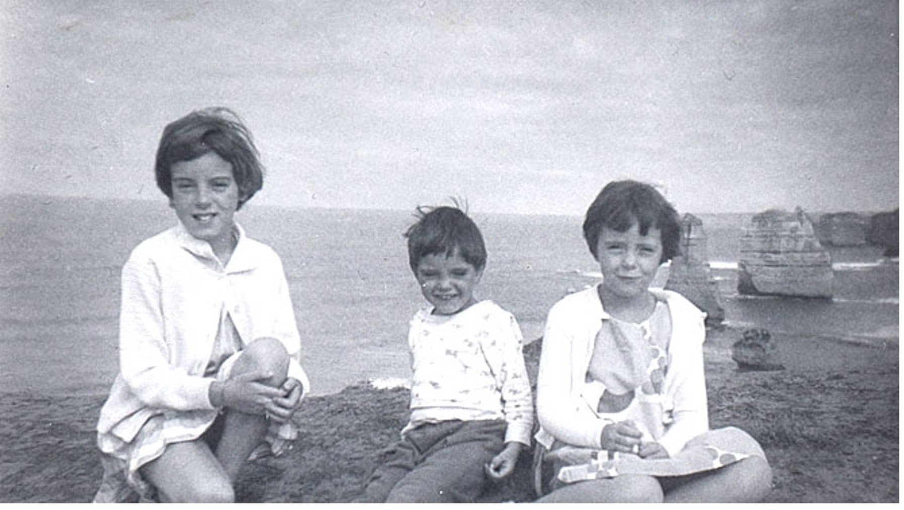

Disappearance of the Beaumont Children
Jane Nartare Beaumont, Arnna Kathleen Beaumont and Grant Ellis Beaumont, collectively referred to in the media as the Beaumont children, were three Australian siblings who disappeared from Glenelg Beach near Adelaide, South Australia, on the 26th of January 1966, the day of Australia Day, in a suspected abduction and murder.
Police investigations revealed that on the day of their disappearance, several witnesses had seen the three children on and near Glenelg Beach in the company of a tall man with fairish to light-brown hair and a thin face with a sun-tanned complexion and medium build, aged in his mid-thirties.
Confirmed sightings of the children occurred at the Colley Reserve and at Wenzel’s cake shop on Moseley Street, Glenelg. Despite numerous searches, neither the children nor their suspected companion was located.
The case received worldwide attention and is credited with causing a change in Australian lifestyles, since parents began to believe that their children could no longer be presumed to be safe when unsupervised in public.
In recent years, police and media speculation has linked the disappearances to the Adelaide Oval abductions of 1973. Interest in this case has continued more than half a century on. As of 2018, a $1 million reward has been offered for information related to the cold case by the South Australian government.